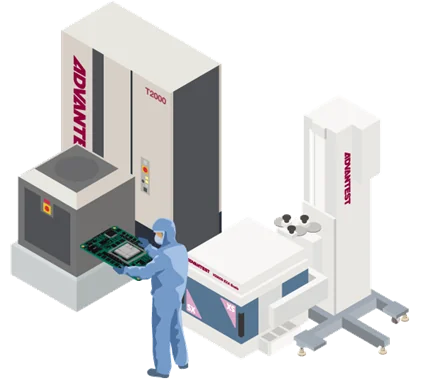
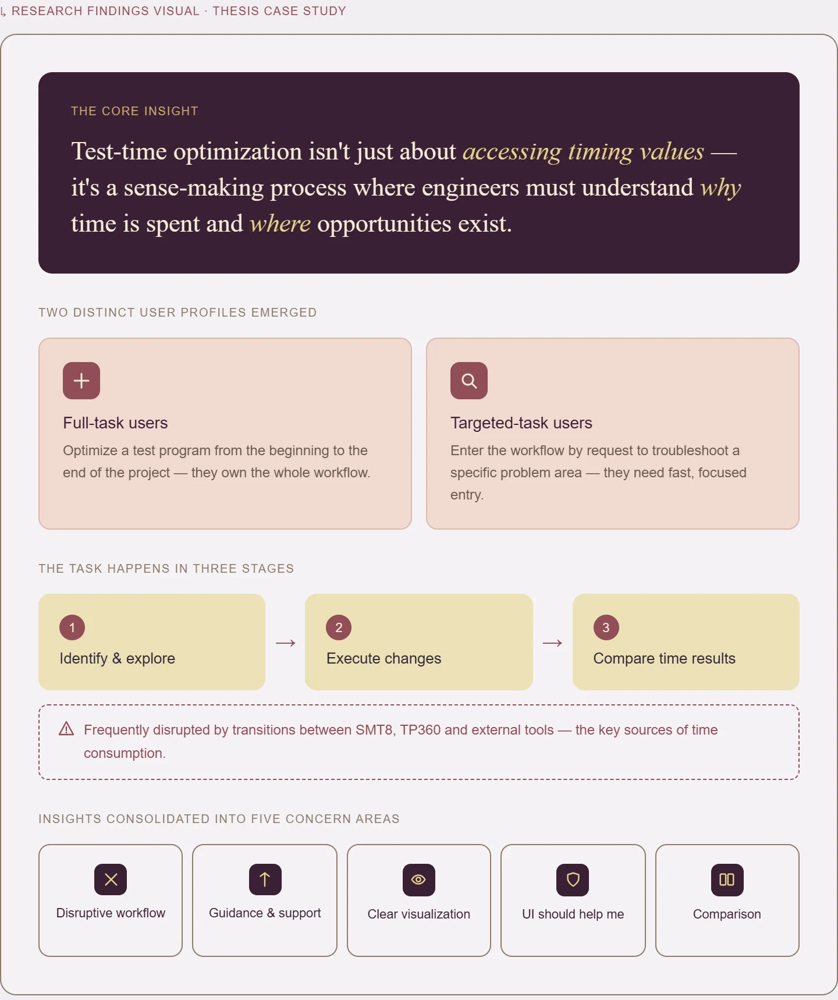

Master’s Thesis · May 2025 – May 2026
(Re)designing a test-time optimization tool for expert engineers
A User-Centered Design project in collaboration with Advantest, one of the world’s leading semiconductor testing companies. Working with specialized users, I researched, designed and evaluated a redesigned feature that transforms passive data display into an active and guiding tool for test-time optimization.

01 - OVERVIEW
The Challenge
Test-time optimization is a highly specialized task performed by a very small global community (roughly 100 engineers worldwide). The existing software tools, known as the TP360 and “Test Time View”, showed engineers raw test-time data and hierarchy. But it was passive: it displayed information but was not helping users make sense of it. Engineers had to manually hunt for optimization opportunities across fragmented views, each following their own path through the software.
A fragmented workflow, passive role in a high-stakes environment
The existing feature showed data but offered no structure, no concurrency visualization and no guidance. Every engineer developed their own workaround, a sign of a tool that was not meeting real needs.
Designing a feature using a UCD process
Apply User-Centered Design in an industrial context to create a unified, active tool that reduces investigation time without replacing the engineers’ expertise and judgment.
02 - PROCESS
Steps Taken
- 1
User research
Remote video interviews with a “show me by doing” approach with 9 engineers
- 2
Synthesis
Requirements definition from research findings.
Userflow optimization.
- 3
Ideation
Exploration of the concept in other fields. Sketches creation.
- 4
Validation
Review session of the sketches with stakeholders close to the task (developers and engineers)
- 5
Hi-fi prototype
Full prototype design in Figma
- 6
Expert review
Evaluation of the prototype against Nielsen’s heuristics and Gestalt principles
03 - RESEARCH
Understanding a specialized workflow
With only around 100 engineers spread across the world performing this task, access to participants was challenging. I conducted 9 remote video interviews with questions that could not only be answered verbally but that could follow a “show me by doing” approach. I asked engineers to walk me through how they actually performed the task in their own environment. This method revealed far more than standard interviews would have.

Fragmented tool usage
Every engineer had developed their own workaround workflow. There was a partial shared mental model of how to approach the task.
Concurrency was invisible
The existing feature showed time data and hierarchy but never visualized process concurrency: the thing engineers needed to spot some optimization opportunities
Manual investigation
Engineers were jumping between multiple views across the software searching for data, consuming significant time before any real analysis could begin.
04 - DESIGN
A tool that guides, points and explains - without replacing judgment
The redesigned feature combines a visualization panel and a data table into a single unified view. For the first time, engineers can see test time data, hierarchy and execution thread concurrency all in one place. In addition, the tool now actively marks potential optimization sections, surfacing opportunities that previously required manual investigation, so that deep analysis only happens when it’s truly needed.
The goal was never to catch every possible optimization problem or to automate the engineers’ expertise away. It was to cut down investigation time and let human judgment focus where it matters most. This is a fundamental principle of designing for expert users: you are not simplifying, you are restructuring information so that expertise can be applied more effectively.
05 - OUTCOMES
Results and Impact
Applying UCD in industry is never as clean as the textbooks describe. I learned that sketches can be perceived as final prototypes, and that expectation management is as much a part of the design role as the design itself. Working with engineering teams taught me to communicate design decisions also with technical language, and to earn trust before introducing new ways of thinking.
The deepest lesson was about the nature of UX/UI in industry itself: designing for expert users is not about making things more aesthetic, it is about restructuring information so that expertise can be applied in a better way. That distinction between simplification and restructuring is something I will carry into every complex design problem I work on.
NEXT